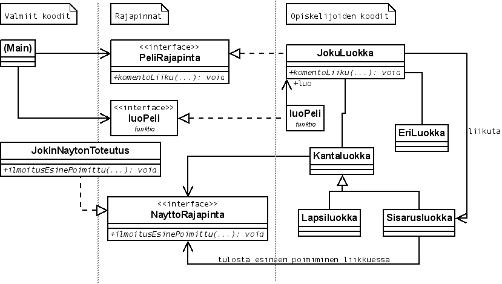

Muutettu $Date: 2017-11-05 17:30:00 +0200 (Sun, 05 Nov 2017) $ ($Revision: 2823 $).
Tässä dokumentissa määritellään harjoitustyönä tehtävältä ohjelmalta vaadittu toiminnallisuus. Aivan kaikkea alla olevissa ohjeissa käsiteltyä ei tarvitse toteuttaa itse, vaan osa annetaan valmiina.
Labyrinttipeli on 1-4 pelaajan erityisen viihdyttävä ja nautinnollinen lautapeli. Osa pelaajista (tai kaikki) voivat olla myös tietokonepelaajia. Jokaisen pelaajan tavoitteena on kerätä labyrintista omat esineensä. Se joka onnistuu tässä ensimmäisenä voittaa pelin.
Pelissä pelaajat yrittävät kerätä labyrintistä pelaajalle määrätyt esineet. Vuorollaan pelaajat muuttavat labyrinttiä työntämällä vapaana olevan työntöpalan pelilaudalle ja lisäksi liikuttavat omaa pelinappulaansa. Tietokonepelaajien tekoäly ei riitä labyrintin muuttamiseen, mutta tietokonepelaajatkin liikuttavat nappuloitaan yrittäen kerätä esineitään.
Yleiset kysymykset harjoitustyöohjeesta lähetetään kurssin moodleen jotta muutkin pääsevät hyötymään kysymyksistä ja vastauksista. Omaan harjoitustyöhön liittyvät kysymykset lähetetään suoraan opettajalle.
Ohjelmalle annetaan komentorivillä alustustiedoston nimi ja mahdolliset debug-vivut.
Valmiina annettavan sovelluskehyksen rajapintojen esittelyt löytyvät gitlabista hakemistosta julkinen. Valmiin koodin kääntäminen onnistuu käyttämällä tiedostoa Makefilean>.
Alla on rakennekaavio, joka selventää sitä, miten harjoitustyön eri osat suhtautuvat toisiinsa.

Julkisen koodin rajapintadokumentaation voi tuottaa myös Doxygen työkalulla omalla koneellaan, jos harjoitustyötä tekee omalla koneellaan koulun palvelinten sijasta. Dokumentaatio tuotetaan doxygen-komennolla julkinen-hakemistossa. Komento tuottaa samaan hakemistoon HTML-muotoisen dokumentaation dokumentaatio-hakemistoon.
Dokumentaatiosta selviävät rajapintojen tarjoamat ja vaatimat poikkeustakuut sekä esi- ja jälkiehdot.
Harjoitustyössä toteutettavan osan pitää toteuttaa annettu Pelirajapinta, Komentoriviparametrien käsittely, alustustiedoston lukeminen ja sen tietojen välittäminen pelille ja pelin pyörittäminen on valmiina annettavan pääohjelman vastuulla. Pelirajapinnan esittely on tiedostossa julkinen/pelirajapinta.hh.
Käytännössä tämä tarkoittaa, että harjoitustyössä periytetään Pelirajapinnasta oma luokka, joka toteuttaa Pelirajapinnan virtuaalifunktiot. Ohjelman pääohjelma tulee valmiina, ja se käyttää pelioliota tuon rajapinnan kautta.
Tiedostossa
julkinen/pelitehdas.hh
esitellään funktio luoPeli(), joka harjoitustyön koodin
pitää toteuttaa.
Tämän funktion tulee luoda new'llä Pelirajapinnan toteuttava peliolio
ja palauttaa se kutsujalle.
Harjoitustyön valmiina annettava pääohjelma luo peliolion ohjelman
alussa kutsumalla tätä funktiota, ja tuhoaa sen ohjelman lopussa
deletellä.
Nayttorajapinta-rajapinnan toteuttava valmis luokka huolehtii kaikesta peliin liittyvästä tulostelusta ja pääohjelma syötteiden kyselystä. Nayttorajapinta-luokan esittely löytyy tiedostosta julkinen/nayttorajapinta.hh. Osoitin näyttöolioon annetaan pelille Pelirajapinnan kautta ohjelman alussa pelin alustamisen aikana.
Tiedostosta julkinen/debug.hh löytyy makro DEBUG_OUTPUT(). Sen avulla voi halutessaan tehdä mielivaltaisia debug-tulostuksia, jotka näkyvät ruudulla, jos ohjelma on käynnistetty debug-tilassa.
Makrolla tehdyt tulostukset näkyvät ruudulla vain jos debug-vipu on annettu ohjelmalle sitä käynnistäessä, joten tulostuksia ei tarvitse suojata ehtolauseilla.
Kaiken pelin koordinaattien käsittelyn hoitaa Koordinaatti-luokka, jonka esittely löytyy tiedostosta julkinen/koordinaatti.hh. Tietueella ja sen yhteydessä määritellyillä operaattoreilla saadaan tehtyä kaikki koordinaattiin liittyvä toiminta. Tätä luokkaa on pakko käyttää omassa toteutuksessaan.
Näyttörajapinta ei sisällä mitään operaatioita virheilmoitusten tulostamiseen, vaan harjoitustyön koodi raportoi kaikista virheistä heittämällä Pelirajapinnasta ulos poikkeuksen. Tätä varten on olemassa valmiin poikkeushierarkian tynkä, josta voi periyttää omia poikkeuksiaan. Heitettyjen poikkeusten sisältämän virhetekstin voi jokainen ryhmä määritellä itse, kunhan se kuvaa syntynyttä virhetilannetta. Itsemääritelty virheteksti ei saa sisältää ääkkösiä merkkienkoodauksien vuoksi, joten ä ja ö merkit on korvattava a ja o merkeillä.
Huomaa, että Pelirajapinnan operaatiot vaativat tietyt poikkeustakuut, mikä asettaa vaatimuksia sen suhteen, missä tilassa pelin tulee olla poikkeuksen heittämisen jälkeen.
Valmiina annetaan myös käytettävän poikkeushierarkian yläosa. Näistä saa itse periyttää omia poikkeusluokkia, ja rajapinnat määrittelevät, millaisia poikkeuksia voi funktioista vuotaa ulos. Lisäksi rajapinnat määrittelevät tarjottavat poikkeustakuut poikkeustilanteen sattuessa.
Määriteltyjen poikkeuksien lisäksi sallitaan kuitenkin aina std::bad_alloc-poikkeuksen vuotaminen ulos, jos muisti loppuu. Tällöin keskeytyneen operaation ei tarvitse välttämättä antaa minkäänlaista poikkeustakuuta (perus- tai minimitakuun tarjoaminen on kuitenkin aina plussaa). Jos operaatiolta kuitenkin vaaditaan no-throw -takuu, ei muistikaan saa loppua operaation aikana. Käytännössä kaikki tämä tarkoittaa sitä, että muistin loppumiseen ei välttämättä tarvitse erikseen varautua.
Pelirajapinnassa määrätyt esiehdot tulee tarkastaa, ja siihen käytetään
makroa ESIEHTO(), jonka käyttö on pakollista
harjoitustyössä.
Mikäli makrolle parametrina annettu esiehto on voimassa (true), jatketaan
ohjelman suoritusta normaalisti. Muussa tapauksessa makro käyttäytyy
määrittelemättömällä tavalla (se saattaa esimerkiksi
keskeyttää ohjelman suorittamisen virheilmoitukseen,
heittää poikkeuksen tms.). Joka tapauksessa ohjelman suorituksen
jatkumisesta ei tarvitse välittää, jos jokin esiehto ei ole voimassa.
Valmis koodi tarjoaa myös makrot JALKIEHTO() ja
INVARIANTTI(), joita voi (ja kannattaa) käyttää
jälkiehtojen ja luokkainvarianttien tarkastamiseen. Normaalia
C++:n assert()-makroa voi tietysti myös käyttää
muuallakin ohjelman järjellisyyden tarkastamiseen.
Esi- ja jälkiehtoja sekä invariantteja pitää tietysti käyttää myös itse suunnitelluissa luokissa. Sopimussuunnittelun käyttö on osana harjoitustyön arvostelua.
Kaikki mainitut makrot määritellään tiedostosssa julkinen/vaittama.hh.
Pelaaja on joko ihmispelaaja tai tietokonepelaaja. Pelaajia pelissä on 1-4, ja niistä mielivaltainen määrä on tietokonepelaajia. Pelaajien määrät, nimet ja tyypit kerrotaan alustustiedostossa.
Pääohjelma huolehtii ihmispelaajien komentojen kysymisestä käyttäjiltä ja niiden välittämisestä Pelirajapinnan kautta varsinaiselle pelille. Tietokonepelaajien tapauksessa pääohjelma suoraan käskee peliä liikuttamaan tietokonepelaajaa tekoälyn mukaisesti.
Labyrintissä on esineitä, joita pelaajat keräävät. Esineet merkitään pienillä kirjaimilla a:sta alkaen, ja kullakin pelaajalla on lista esineistä, joita pelaajan tulee kerätä järjestyksessä. Pelaaja, joka ensimmäisenä saa kerättyä kaikki esineensä, on voittaja.
Labyrintti on suorakaiteen muotoinen. Sen koon määrää pääohjelma Pelirajapinnan kautta. Labyrintin vasemman ylänurkan koordinaatti on (1,1), x-koordinaatti kasvaa oikealle ja y-koordinaatti alaspäin.
Labyrintti koostuu ruuduista. Ruutuja on kolmenlaisia ja jokaisella ruudulla on neljä erilaista rotaatiota. Ruudut esitetään tekstuaalisesti 4x4-kokoisella alueella siten, että nurkat merkitään +-merkillä (plus). Seinät merkitään joko -- tai |-merkeillä (miinus ja pystyviiva), riippuen siitä onko kyseessä vaaka- vai pystyseinä. Ruudun sisällä olevat tyhjät osat täytetään .-merkeillä (piste). Eri ruudut numeroituine rotaatioineen ovat
| Ruutu | Rotaatio 1 | Rotaatio 2 | Rotaatio 3 | Rotaatio 4 |
|---|---|---|---|---|
| I-ruutu |
+..+
|..|
|..|
+..+
|
+--+
....
....
+--+
|
+..+
|..|
|..|
+..+
|
+--+
....
....
+--+
|
| L-ruutu |
+..+
|...
|...
+--+
|
+--+
|...
|...
+..+
|
+--+
...|
...|
+..+
|
+..+
...|
...|
+--+
|
| T-ruutu |
+--+
....
....
+..+
|
+..+
...|
...|
+..+
|
+..+
....
....
+--+
|
+..+
|...
|...
+..+
|
Jos ruudussa on esine, piirretään esinettä kuvaava symboli jokaisen ruudun keskelle jäävän 2x2-kokoisen alueen oikeaan alakulmaan. Samoin jos ruudussa on pelaaja, piirretään pelaajan numero keskialueen vasempaan yläkulmaan. Esimerkiksi, jos L-ruudussa (ensimmäisessä rotaatiossaan) on sekä pelaaja X että b-esine, on tilanne seuraava:
Ruudussa ei voi olla samaan aikaan kahta pelaajaa tai kahta esinettä.
Pelissä ruutuja on yksi enemmän kuin labyrintin koko (yksi ruutu joka labyrintin kohtaan ja yksi työntöpala). Pääohjelma lisää ruudut Pelirajapinnan kautta ja päättää erityyppisten ruutujen määrät ja rotaatiot.
Labyrintin lisäksi pelissä on aina yksi labyrintin ulkopuolella oleva ruutu (työntöpala), jonka jokainen ihmispelaaja vuoronsa aluksi työntää labyrinttiin ja samalla pudottaa labyrintistä yhden ruudun pois uudeksi työntöpalaksi. Työntöruudussa ei voi olla koskaan pelaajaa, mutta siinä voi muiden ruutujen tapaan olla esine.
Ohjelmakoodissa työntöpalan tunnistaa Koordinaatti-luokan avulla. Koordinaatti-olion onkoIrtopala-jäsenfunktio vastaa työntöpalalle true, muille false (työntöpalan X- ja Y-koordinaatteja ei saa kysyä). Koordinaatti-luokalla on oma rakentajansa työntöpalalle sopivan Koordinaatti-olion luomista varten.
Lisäksi labyrintissä on erilaisia erikoispaloja, jotka aiheuttavat erilaisia toimintoja pelaajan astuessa erikoispalaan. Erikoispaloja ei piirretä karttaan näkyviin, joten pelaaja ei voi tietää niiden sijaintia ennen astumistaan erikoispalaan. Erikoispalaan voi astua monta kertaa ja toiminta on aina sama. Erikoispaloja ovat:
Teleportti siirtää porttiin astuneen pelaajan portille alustuksessa arvottuun kohderuutuun. Jos pelaaja astui teleporttiin kesken liikkumisen, pelaaja siirretään porttiin astuessaan ja pelaaja pysäytetään teleportin kohderuutuun.
Teleportti vaikuttaa samalla lailla sekä ihmis- että tietokonepelaajiin. Jos teleportin kohderuutu on teleporttiin astumishetkellä työntöpalassa tai kohderuudussa on jo pelaaja, teleportilla ei ole vaikutusta (koska pelaaja ei voi siirtyä työntöpalaan eikä yhdessä ruudussa voi olla kahta pelaajaa).
Palaan astumisesta annetaan ilmotus näyttörajapinnan kautta.
Kirottu pala poistaa pelaajan seuraavan vuoron. Useampaan kirottuun palaan astuminen vie useamman vuoron. Siunattu pala kumoaa kirotun palan vaikutuksen ja kirottu pala kumoaa siunatun palan vaikutuksen. Kirottuun palaan astuminen ei lopeta senhetkistä kesken olevaa vuoroa. Eli pelaaja voi liikkua vaikka palan työntämisen seurauksena astuisikin kirottuun palaan.
Kirottuihin paloihin voi astua yhden liikkumisen aikana useita kertoja, jos niitä osuu kohdalle. Tällöin niiden vaikutukset kumuloituvat eli vuoroja menetetään useita (yksi siunattu pala luonnollisesti edelleen kumoaa yhden kirotun palan vaikutuksen).
Palaan astumisesta annetaan ilmotus näyttörajapinnan kautta.
Siunattu pala lisää pelaajalle yhden vuoron, joka suoritetaan pelaajan normaalin vuoron jälkeen. Pelaaja voi astua useampaan siunattuun palaan vuorolla, jolloin pelaaja suorittaa vuoronsa jälkeen astumiensa siunattujen palojen verran lisävuoroja. Kirottu pala kumoaa siunatun palan vaikutuksen ja siunattu pala kumoaa kirotun palan vaikutuksen.
Siunattuihin paloihin voi astua yhden liikkumisen aikana useita kertoja, jos niitä osuu kohdalle. Tällöin niiden vaikutukset kumuloituvat eli lisävuoroja saa useita (yksi kirottu pala luonnollisesti edelleen kumoaa yhden siunatun palan vaikutuksen).
Palaan astumisesta annetaan ilmotus näyttörajapinnan kautta.
Pelaajat voivat liikkua labyrintissä yhden vuoron aikana mielivaltaisen määrän vaaka- tai pystysuuntaan, mutta seinien läpi ei luonnollisesti voi liikkua eikä labyrintin ulkopuolelle saa mennä. Liikkumisen aikana pelaaja kerää matkan varrelta ne esineet, jotka se voi poimia. Jos pelin alussa pelaaja on ruudussa, jossa on esine, sitä ei poimita, ts. poimiminen tapahtuu vain uuteen ruutuun siirryttäessä. Jos pelaaja siirretään toiseen ruutuun muutoin kuin oman liikkumisen aikana, ei esineitä kerätä eikä erikoispaloja aktivoida. Liiku-komennon yhteydessä liikkuminen dokumentoidaan tarkemmin.
Ohjelman käyttämän alustustiedoston formaatti on yksinkertainen avainsana-parametri yhdistelmään perustuvajärjestelmä.
Esimerkki tiedosto:
SIEMENLUKU 32
PELAAJIA 4
IHMINEN Erkki
IHMINEN Pertti
TIETOKONE DeepBlue
TIETOKONE K9
Avain sanat:
Pelin aluksi arvotaan ruuduista yksi, joka jää labyrintin ulkopuolelle ensimmäiseksi työntöpalaksi. Tämän jälkeen jäljelle jääneistä ruuduista sekoitetaan suorakulmion muotoinen labyrintti. Käytännössä ruutujen sekoittaminen tarkoittaa, että arvotaan jokaiselle ruudulle paikka labyrintista, ruudun alkutilan rotaatio sekä ruuduista arvotaan ruudut, joilla on erikoistoiminnallisuutta. Tämän hoitaa pääohjelma Pelirajapinnan kautta.
Peliin lisätään pelaajat, jotka aloittavat labyrintin kulmista. Pääohjelma lisää pelaajat peliin Pelirajapinnan kautta.
Lisäksi arvotaan missä ruudussa mikin esine sijaitsee, ja kuka pelaaja etsii minkäkin esineen. Tämänkin hoitaa pääohjelma Pelirajapinnan kautta.
Alustuksen lopuksi pääohjelma kutsuu Pelirajapinnan alustusLopeta-funktiota.
Peli muodostuu vuoroista. Vuoron aikana ihmispelaaja ensin sijoittaa työntöpalan laudalle ja tämän jälkeen halutessaan liikkuu labyrintissa. Tietokonepelaajan toiminta eroaa tästä hieman ja selitään myöhemmin.
Kuitenkin kaikkien pelaajien tavoite on yrittää liikkua ruutuun, jossa on esinelistan päälimmäinen esine. Jos pelaaja onnistuu liikkumaan tällaiseen ruutuun, poistetaan ko. esine listasta ja pelaaja voi lähteä etsimään seuraavaa esinettä. Jos pelaajan löytämä esine oli esinelistan viimeinen, peli loppuu.
Ohjelman toteutuksessa jokaisen vuoron alussa sekä työntö-komennon antamisen jälkeen tulostetaan ruudulle pelin tilanne. Esimerkiksi, jos pelaajia on yhteensä 3 ja jokaisella on etsittävänään 4 esinettä, voisi tulostus olla
Kuten esimerkkitulostuksesta huomataan, tulostus jakautuu kolmeen eri osaan. Ensin tulostetaan koko labyrintti, tämän jälkeen pelaajien esinelistat sekä pelaajien viimeisin toiminto ja lopuksi työntöpala kaikissa eri rotaatioissaan.
Labyrintin tulostus tehdään käyttäen valmiina toteutettua näyttöoliota, jota peli käyttää Nayttorajapinnan kautta. Pelin alustuksen yhteydessä pääohjelma antaa pelille osoittimen näyttöolioon.
Labyrintin tulostus tehdään siirtämällä näyttöolio labyrintin rakennustilaan funktiolla komentoAloitaRakennus. Sen jälkeen palat, pelaajat ja esineet lisätään labyrinttiin funktioilla palaLaudalle, pelaajaLaudalle ja esineLaudalle. Myös työntöpala lisätää labyrinttiin samalla tavalla. Lopuksi valmis labyrintti tulostetaan funktiolla komentoLopetaRakennus.
Pelaajan tiedot tulostetaan funktiolla tulostaPelaajanTiedot. Esinelistojen tulostuksessa kerättävissä esineissä muut kuin seuraavaksi haettava esine on korvattu *-merkillä.
Pelaajan kohdalla tulostetaan myös pelaajan viimeksi tekemä toiminto.
Ihmispelaajan tapauksessa viimeisin komento on aina joko "liiku" tai "paikallaan",
jotka tulostetaan siinä muodossa kuin ne olisi annettu syötteenä, esim.
"(liiku v 3)".
Tietokonepelaajalle vaihtoehtoja on
tietokoneen liikkumistavasta johtuen kaksi.
Tietokonepelaaja on edellisellä vuorollaan joko
pysynyt paikallaan (tulostetaaan
"(-)") tai se on liikkunut (liiku-komento kuin se
olisi annettu syötteenä, esim. "(liiku v 3)".
Esimerkkitilanteessa pelaaja 0 on siis viimeksi liikkunut kaksi
ruutua oikealle.
Pelin alussa kun pelaaja ei ole vielä tehnyt mitään toimintoa,
tulostetaan "(-)".
Kuinka pelaaja toimii vuoronsa aikana riippuu siitä, onko vuorossa ihmispelaaja vai tietokonepelaaja. Ihmispelaajan tapauksessa ohjelma odottaa pelaajan toimintakomentoja, mutta tietokonepelaajan tapauksessa ohjelma tekee toiminnot automaattisesti.
Pelaaja sijoittaa tyonna-komennolla työntöpalan laudalle. Tämän jälkeen pelaaja joko liikkuu labyrintissa liiku-komennolla tai pysyy paikallaan paikallaan-komennolla. Kun pelaaja on tehnyt nämä toiminnot, siirtyy vuoro seuraavalle pelaajalle.
Pääohjelma hoitaa ihmispelaajan toiminnot kysymällä komennon pelaajalta ja sitten kutsumalla Pelirajapinnan funktioita komentoTyonna ja komentoLiiku. Jos pelaaja pysyy paikallaan, komentoLiiku-funktiossa suunta on PAIKALLAAN.
Toisin kuin ihmispelaajat tietokonepelaaja ei sijoita työntöpalaa laudalle vaan yrittää suoraan siirtyä siihen ruutuun, jossa tietokonepelaajan etsimä esine on. Tämä tapahtuu seuraavasti:
Pääohjelma hoitaa tietokonepelaajan toiminnot kutsumalla Pelirajapinnan funktiota komentoLiiku parametrilla AUTOMAATTI.
Sekä ihmis- että tietokonepelaajat keräävät liikkumisensa aikana vain seuraavaksi kerättävät esineet. Jos pelaaja liikkumisensa aikana kerää esineen ja liikkumisensa aikana päätyy ruutuun, jossa on paljastuva seuraavaksi kerättävä esine, myös se poimitaan. Näin hyvällä onnella yhdellä liikkumisella pystyy poimimaan useita esineitä.
Esineen keräämisestä annetaan ilmotus näyttörajapinnan kautta.
Vuoron lopussa pääohjelma kutsuu Pelirajapinnan funktiota vaihdaVuoro. Jos vuoron lopussa jonkin pelaajan kaikki esineet on kerätty (ko. pelaaja voitti), palautetaan vaihdaVuoro-funktiosta paluuarvona false, muuten true.
Ihmispelaajan vuorojen aikana ohjelma odottaa käyttäjältä komentoja, joiden perusteella vuorossa oleva pelaaja toimii.
Alla on kerrottu laillisten komentojen aiheuttama toiminta. Jos pelaaja antaa komennon, jota ei ole listassa, annetaan virheilmoitus. Jos komentoa käsiteltäessä kohdataan virhetilanne, heitetään poikkeus Pelirajapinnan ohjeiden mukaisesti.
Pelaajan täytyy joka vuoronsa alussa sijoittaa työntöpala osaksi labyrinttia tietystä suunnasta. Tällöin laudan toiselta puolelta jää ruutu ylimääräiseksi ja tästä tulee seuraavaksi vuorossa olevan pelaajan työntöpala.
Komennon syntaksi on tyonna rotaatio suunta
paikka. Parametri rotaatio kertoo missä
rotaatiossa työntöpala sijoitetaan laudalle, suunta
kertoo miltä sivulta työntäminen tapahtuu ja paikka mille
suunta-parametrin osoittaman sivun paikalle työntöpala
sijoitetaan.
Suunta- ja paikka-parametreja merkitään seuraavasti:
y
1 2 3 4 5
1 X X X X X 1
2 X X X X X 2
v 3 X X X X X 3 o
4 X X X X O 4
5 X X X X X 5
1 2 3 4 5
a
missä X-merkit sekä O-merkki kuvaavat labyrintin ruutuja,
sivujen luvut paikka-parametrin arvoja ja
kirjaimet suunta-parametrin arvoja.
Esimerkiksi siis komento tyonna 2 o 4 tarkoittaisi, että
työntöpalana oleva ruutu sijoitetaan toisessa konfiguraatiossaan oikean sivun
paikkaan 4. Tätä paikkaa on merkitty kuvassa O-kirjaimella.
Parametreilla on seuraavat rajoitteet:
rotaatio täytyy olla luku välillä 1-4.suunta täytyy olla kirjain v, y, o tai a.paikka täytyy olla luku välillä 1-x, missä x on labyrintin koko ko. suuntaan.Lisäksi vastaan voi tulla tilanne, jolloin käyttäjä on jo vuoronsa aikana tehnyt työntötoimenpiteen ja antaa silti komennon työnnä. Tällöin annetaan käyttäjälle virheilmoitus.
Työntöpalan laudalle sijoittamisen ideana on siirtää muita laudalla olevia ruutuja työntösuunnassa eteenpäin. Tällöin työntösuunnassa kauimmaisin ruutu tippuu pois labyrintista ja tätä ruutua käytetään seuraavalla kierroksella työntöpalana. Esimerkiksi jos työntöpala työnnetään jollekin riville oikealta, niin työntöpalasta tulee uuden labyrintin kyseisen rivin oikeanpuolimmaisin ruutu. Entinen oikean reunan ruutu siirtyy yhdellä vasemmalle jne. Lopulta rivin entisestä vasemmanpuolimmaisesta ruudusta tehdään seuraavan kierroksen työntöpala.
Jos ruudussa, joka työnnettiin pois laudalta, on pelaaja, täytyy tämä pelaaja sijoittaa takaisin laudalle. Tällaisessa tapauksessa pelaaja sijoitetaan aina sille ruudulle, joka toimi työntöpalana, eli pelaaja pyörähtää työntösuunnassa laudan toiselle puolelle. Ruuduissa oleville esineille ei tehdä mitään. Eli pelin alussa esineet arvotaan tietyille ruuduille ja ne pysyvät näissä ruuduissa koko pelin ajan. Jos siis sellainen ruutu, jossa on esine, siirtyy pois labyrintista työntöpalaksi, seuraa esine palan mukana.
Jos pelaaja työnnettiin ulos laudalta ja sen seuraksena siirretään ruutuun, jossa on esine tai erikoispala, ei esinettä poimita eikä erikoispalan toiminnallisuutta toteuteta.
Sijoitettuaan työntöpalan laudalle pelaaja voi joko liikkua
labyrintissa tai pysyä paikallaan. Liikkuminen tapahtuu komennolla
liiku suunta määrä, joka ottaa parametreinaan liikkumisen suunnan
(v[=vasemmalle], y[=ylös], o[=oikealle] tai a[=alas]) ja sen, kuinka monta ruutua
liikutaan.
Pelaajan liikkumista labyrintissa on rajoitettu seuraavasti
Parametrina annettu ruutu tarkastetaan seuraavien virhetilanteiden varalta:
suunta-parametri ei ole jokin kirjaimista
v, y, o tai a, tai määrä-parametri ei
ole vähintään 1, tai pelaaja joutuisi labyrintin ulkopuolelle.Lisäksi pitää varautua tilanteeseen, jossa pelaaja ei ole vielä sijoittanut vuorollaan työntöpalaa laudalle. Tällaisessa tilanteessa annetaan virheilmoitus.
Sijoitettuaan työntöpalan laudalle pelaaja voi joko liikkua
labyrintissa tai pysyä paikallaan. Paikallaan pysyminen tapahtuu komennolla
paikallaan, joka ei ota parametreja.
Pelaajan annettua paikallaan-komennon hänen vuoronsa
loppuu. Mikäli pelaaja yrittää antaa paikallaan-komennon
ennen kuin hän on sijoittanut työntöpalan labyrinttiin, annetaan
käyttäjälle virheilmoitus.
Komento lopeta lopetaa ohjelman suorituksen.
Kaikkea osia harjoitustyöstä ei ole pakko toteuttaa, vaan tärkeämpää oli saada koko järjestelmä toimimaan suunnitelman tasolla. Vapaaehtoisesti toteutettavat osat ovat:
Toteuttamattomista ominaisuuksista pitää heittää ToteuttamatonVirhe-poikkeus ja toteuttamattomat ominaisuudet pitää dokumentoida palautusdokumenttiin.
Kun ohjelmalle annetaan parametri -d, tulostetaan ohjelman ajon aikana sen toimintaa selventäviä debug-tulosteita. Debug-tulosteet on tarkoitettu helpottamaan oman ohjelman toteuttamista ja testaamista. Tulosteiden muotoilu, järjestys ja niiden esittämä tieto on täysin ryhmän itsensä päätettävissä. Debug-tulosteet tulostetaan julkinen/debug.hh-tiedostosta löytyvän makron avulla. Kyseinen makro tulostaa asioita ruudulle vain silloin, jos debug-optio on annettu ohjelmaa käynnistettäessä. Muussa makron käyttäminen ei tee mitään.
Debug-tila vaikuttaa myös poikkeusten käsittelyyn pääohjelmassa. Normaalitilassa pääohjelma nappaa poikkeukset ja tulostaa niihin liittyvät viestit päättäen ohjelman paluuarvoon EXIT_FAILURE. Poikkeusten nappaaminen kuitenkin kadottaa poikkeukseen liittyvät pinolistaustiedot, vaikka poikkeuksen heittäisi uudelleen. Tästä syystä debug-tilassa poikkeuksia ei käsitellä, jotta ne voi tarvittaessa napata debuggerilla ja saada niihin liittyvän pinolistauksen.
Kun ohjelmalle annetaan parametri -n, tulostetaan jokaisen pelilaudan tulostuksen alussa kaikki pelissä olevat pelaajat, esineet ja erikoispalat listana, joka sisältää koordinaatit. Esimerkki ohjelman tekemästä tulostuksesta löytyy tiedostosta julkinen/esimerkkiajot/90-nayton-debug.tst.out
Esimerkki pelin pelaamisesta löytyy tiedostostosta julkinen/esimerkkiajot/99-esimerkkiajo.tst.out.
Esimerkkiajo on tuotettu alustustiedostolla julkinen/esimerkkiajot/99-esimerkkiajo.tst ja syötteellä julkinen/esimerkkiajot/99-esimerkkiajo.tst.in
Esimerkkiajoa voi käyttää yhtenä oman ohjelmansa testitapauksista. Seuraava komento ajaa esimerkkiajon ja ottaa tulostuksen talteen tiedostoon. Komentoa voi käyttää soveltaen omien testitapausten ajamiseen. Kannattaa erityisesti muistaa ohjata ohjelman tuottama tulostus jonnekin muualle kuin referenssitulosteen päälle! Eroja tulostuksen välillä voi sitten etsiä esim. diff-komennolla.